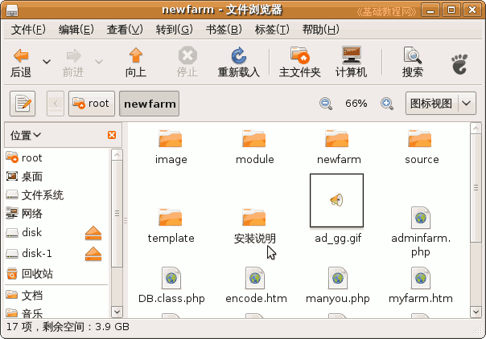
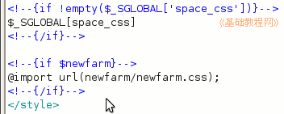
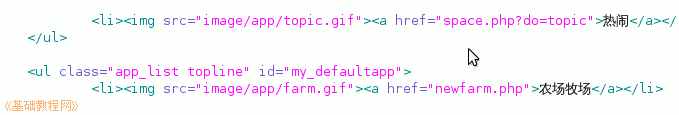
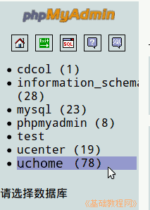
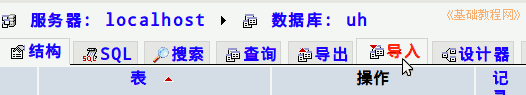
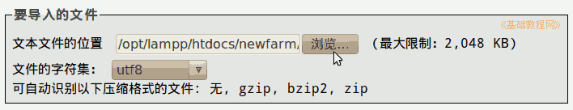
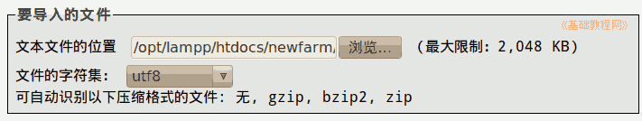
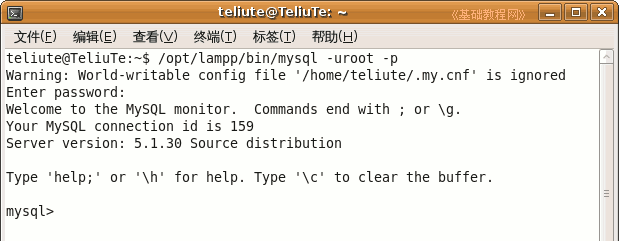
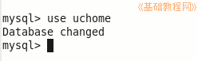
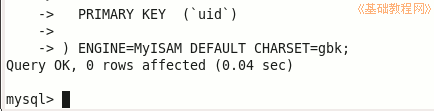

Discuz!论坛安装教程
作者：TeliuTe 来源：基础教程网
在家园里可以安装小游戏，通过增加数据表的方法，下面我们来看一个练习；
1、开心农场游戏
1）下载农场游戏，先看看安装说明：http://bbs.haskey.cn/thread-45965-1-1.html
2）解压安装包，复制到家园文件夹中，这里是uh文件夹；

3）编辑 uh/template/default/header.htm 文件，找到</style>，在它之前插入
<!--{if $newfarm}-->
再查找“热闹”，在它这一行的后面插入 <li><img src="image/app/farm.gif"><a href="newfarm.php">农场牧场</a></li>

2、增加数据表
1）打开phpMyAdmin，在Windows中点托盘图标－phpMyAdmin，Ubuntu 中，在浏览器中输入地址打开进入；
2）在出来的窗口左侧栏，找到 uchome 数据库点击选中；

3）在出来的列表上边，找到导入点一下；

4）点“浏览”找到农场的数据表后，点右下角的执行；

5）同样再打开updata文件夹里的sql.txt，导入进来，注意语句最后要有个分号；

6）然后登录空间，点左上角的“个人中心－农场牧场”；
7）点左边的“农场牧场”，就可以进入游戏了；
如果在Ubuntu中用户名出现乱码，请参考：http://www.phpwind.net/read-htm-tid-906114.html
3、在mysql中增加数据表
1）打开终端，输入命令： /opt/lampp/bin/mysql -uroot -p 按回车输入密码进入mysql>

2）在mysql提示符下，输入：use uchome 打开家园数据库；

3）打开安装说明里的sql文件，复制里面的全部内容，粘贴到mysql提示符后面，按回车运行；

4）同样再复制updata里的另一个sql里的内容，在mysql后运行；
5）然后输入quit 按回车退出，再同样修改header.htm即可，到uchome的管理面板更新一下缓存；
本节学习了安装家园小游戏的基本方法，如果你成功地完成了练习，请继续学习下一课内容；
本教程由86团学校TeliuTe制作|著作权所有
基础教程网：http://teliute.org/
美丽的校园……
转载和引用本站内容，请保留作者和本站链接。